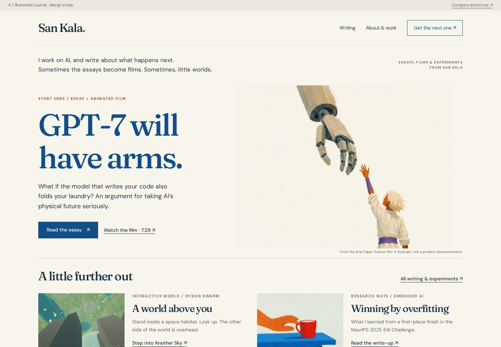
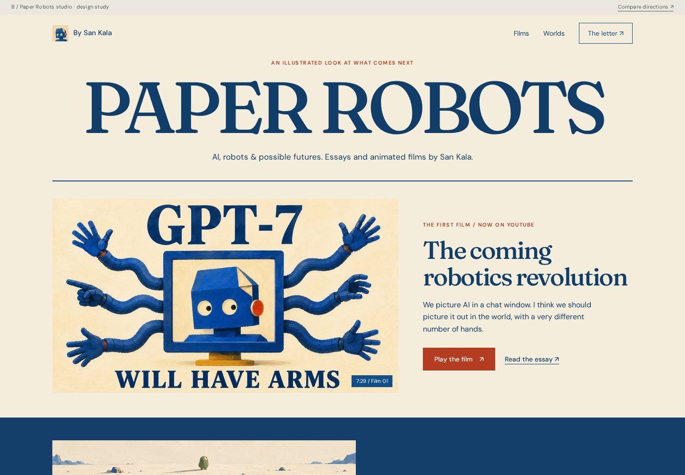
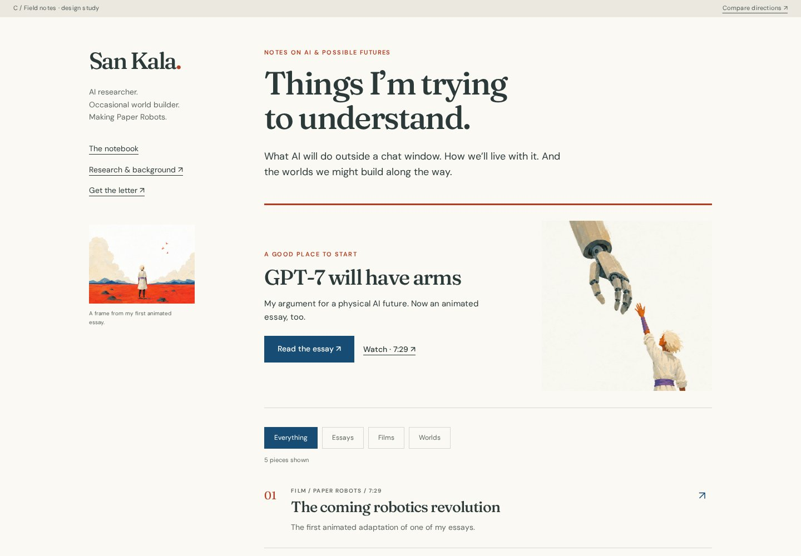

A / Recommended starting point
The illustrated journal
An author’s home with the warmth of the films. Read and watch sit together; your work and background are one click away.
Open the journal ↗Audience first. Professional opportunities through the work. These use your actual Paper Robots artwork, existing essays, published film, and space experiments.
My recommendation: A, the illustrated journal. Keep your name on the front door, give the films and essays the Paper Robots character, and use one free letter to bring people back. Borrow C’s browsable notebook when the archive grows.

An author’s home with the warmth of the films. Read and watch sit together; your work and background are one click away.
Open the journal ↗
The strongest channel connection. Good if Paper Robots becomes the name people seek out; your personal identity is less prominent.
Open the studio ↗
A readable, practical home for frequent writing and experiments. Easier to browse; less of the film’s painted world in the first impression.
Open the notebook ↗The pages work from a local file or a web server. Work links go to the actual published pieces. Newsletter signup is a labeled demonstration; nothing is collected.
Use Substack as the letter and a place to meet readers. Keep sankala.me as the home of your essays, films, sources, and experiments. You don’t need a second editorial calendar.
Your best work in a place you control. Essays with their films, references, interactive pieces, and your professional background.
Reader’s next step: read, watch, explore, subscribe.Paper Robots, by San Kala. A useful free edition of each substantial release, sent by email. Replies and reader discovery in the same place.
Reader’s next step: subscribe or reply.Complete Paper Robots films. Each one connects to the full essay and the same letter. One film already published; no invented release schedule.
Viewer’s next step: watch another, read, subscribe.A strong thought, scene, or demonstration that stands on its own. Link to the piece that follows naturally from that post.
Reader’s next step: follow the idea further.One idea → an essay or experiment → a useful letter → a film when it adds something → a few good posts.
Dyson Swarm remains the space collection, with San credited and the same letter linked. It doesn’t need its own newsletter.
The site direction and proposed newsletter name need your review. Substack is a recommendation, not an account I’ve created. No signup, paid plan, payment connection, or public redesign is live.
You can publish a full essay on both places if it serves readers. I’d start with the rich version on your site and a worthwhile adapted email edition. That avoids maintaining two identical pages every time you correct or expand something.
Substack supports reader discovery through Recommendations and email-list export. These are useful facilities, not a guarantee of reach.